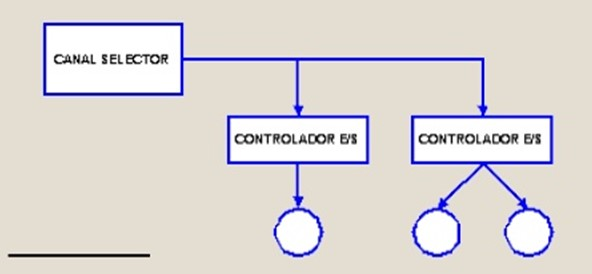

Estos canales todavía se pueden hacer más complejos
añadiendo una memoria local propia que los convierte en procesadores
específicos de E/S.
La programación de la operación de E/S por parte del
procesador se realiza escribiendo en memoria los datos y las instrucciones
que necesita el canal de E/S para gestionar toda la operación de E/S.
La información que se especifica incluye el dispositivo al que tenemos
que acceder, la operación que se debe realizar indicando el nivel de
prioridad, la dirección del bloque de datos donde tenemos que leer o
escribir los datos que se han de transferir, el tamaño del bloque de datos
que se tienen que transferir, cómo se tiene que hacer el tratamiento
de errores y cómo se ha de informar al procesador del final de la
operación de E/S.
Cuando se acaba la operación de E/S, el canal de E/S informa
al procesador de que se ha acabado la transferencia y de posibles errores
mediante la memoria. También se puede indicar el final de la transferencia
mediante interrupciones.
Las dos configuraciones básicas de canales de E/S son las siguientes:
Canal selector: está diseñado para periféricos de
alta velocidad de transferencia y solo permite una operación de
transferencia simultánea.
Canal multiplexor: está diseñado para periféricos más
lentos de transferencia y puede combinar la transferencia de bloques de datos
de diferentes dispositivos.
Las ventajas principales de los canales de E/S respecto a los controladores
de E/S son las siguientes:
Permiten controlar operaciones de E/S simultáneas.
Se pueden programar múltiples operaciones de E/S sobre
diferentes dispositivos o secuencias de operaciones sobre el mismo dispositivo,
mientras el canal de E/S efectúa otras operaciones de E/S.
